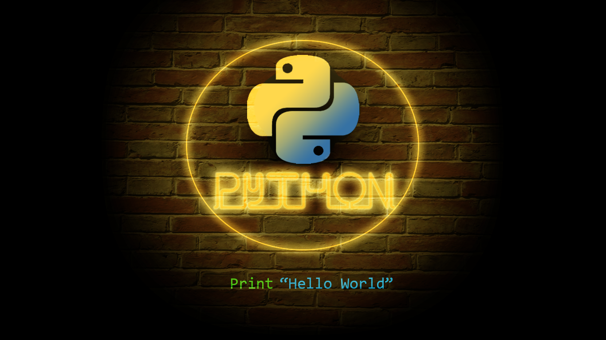

Noticias
proyectos echos en python
Desarrollador de Software | Python | Análisis de Datos
- Habilidades:
- Python (Tkinter, Flask, Pandas, NumPy, Matplotlib, Seaborn)
- Desarrollo Web (HTML, CSS)
- Bases de Datos (MySQL, SQL Server, MariaDB)
- Control de Versiones (Git, GitHub)
Te invito a explorar mis proyectos en GitHub

Catalogo de peliculas
en este proyecto utilice python y libreria tkinter, base de datos sql lite. es un catalogo de peliculas en el cual podes agregar, guardar, modificar o borrar peliculas. tambien tiene para buscar dichas peliculas por genero o por su nombre.
👉 ver proyecto
app flask-tableros
en este proyecto utilice python y libreria flask, base de datos mysql. es una aplicacion web, donde en el backend utilice flask y en el frontend utilice html y css. la idea de la app es tener varios tableros en donde se puedan visualizar y analizar datos los resultados se muetran con libreria de python matplotlib.
👉 ver proyecto
analisis de datos echo en python
en este proyecto realice un analisis de datos a traves de una encuesta se recopilo informacion, se importo la encuesta a python con pandas, numpy se hizo la limpieza de los datos y con matplotlib, seaborn la visualizacion de dichos datos. donde se calculo estadisticas y se realizaron graficos.
👉 ver proyecto